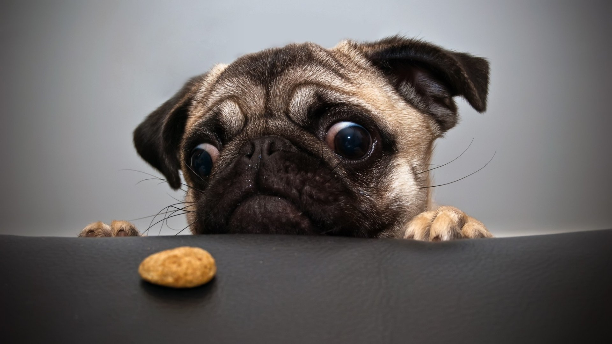

Mopsul este o rasă de câini de mici dimensiuni, caracterizați de o față puternic ridată, bot turtit și coadă încolăcită. Blana este fină și strălucitoare, corpul compact cu mușchi bine dezvoltați. Funcția lor este de animale de companie, fiind descriși prin sintagma multum in parvo (mult prin puțin), cu referință la personalitatea și dimensiunile sale. Cunoscut în China antică sub denumirea de lo-sze, fiind posibili strămoși ai raselor pechinez și King Charles Spaniel. Au fost introduși și popularizați în Europa de către Casa de Orania în Olanda și dinastia Stuart în Marea Britanie. Mopsul poate suferi de o varietate de boli, incluzând supraîncălzire, obezitate, reflex faringian și două boli ce pot fi fatale: meningoencefalită necrotică și anomalie congenitală vertebrală. Necesită o îngrijire specială a urechilor și a cutelor de pe față. Simpatic, amuzant (are mereu o mină ușor îngrijorată și nedumerită, sugerată de ridurile de pe frunte), afectuos și atașat de stăpân și de familia acestuia, Pug-ul este un partener canin plăcut și reconfortant. Acești câini se împacă bine cu copiii și acceptă destul de ușor străinii care se comportă prietenos. Deși le va semnala prezența cu lătrături sonore, se va obișnui repede cu prezența lor (ceea ce nu îi recomandă în rol de paznici de nădejde). Nu sunt prea dispuși la efort fizic, au o natură mai sedentară și sunt comozi din fire. Preferă jocurile și activitățile mai puțin dinamice, desfășurate pe suprafețe mici, în zone cunoscute. Preferă plimbările liniștite efectuate mai ales dimineața devreme și în orele serii, pentru că nu rezistă bine la căldură excesivă. Se dovedește adesea încăpățânat și temperamental, mai ales în absența unui dresaj bine executat. Daca vrei sa aflii mai multe, apasa aici: Pugs.
